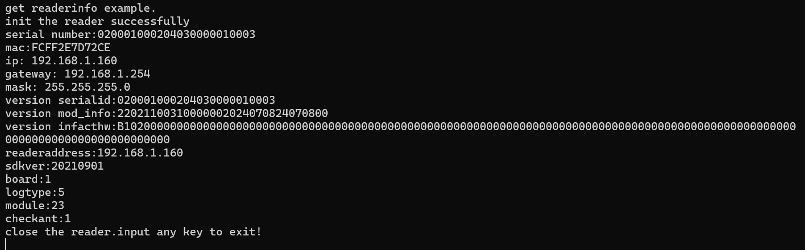

- 制作者
 1.11.0
1.11.0
|
ModuleAPI_C_doc
|
/**
* 获取读写器相关信息/get reader info
*/
#include < stdio.h>
#include "ModuleReader.h"
void main()
{
char c;
int hreader;
READER_ERR err;
int ants[] = {1};
int tagcnt;
int timeout=200;
TAGINFO tag_;
int i;
int f;
CustomParam_ST cst;
Reader_Ip rip;
unsigned char data[200]="reader/moduleinfo";
unsigned char paraBuf[100]="reader/macaddr";
char out[400];
unsigned char version[64];
char rdrip[50];
HardwareDetails hddt;
printf("get readerinfo example.\n");
//连接地址为com4,如果指定波特率则可以例如:com4:921600,模块天线端口为1，
//注意并非已连接天线的数量，指模块的天线端口总数量
//connect to "com4",if you want to speciate the baudrate,you could input the address as "com4:921600".1 means 1 antenna port.
//note:the antenna port numbers is all of reader， not the connected antennas numbers.
err=InitReader_Notype(&hreader, "192.168.1.160", 1);
if (err != MT_OK_ERR)
{
printf("init the reader err :%d,input any key to exit!\n", err);
scanf("%c",&c);
return ;
}
printf("init the reader successfully\n");
//序列号/serial number
cst.pCusParam=data;
cst.CParamlen=strlen("reader/moduleinfo");
err =ParamGet(hreader,MTR_PARAM_CUSTOM,&cst);
if(err!=MT_OK_ERR)
if (err != MT_OK_ERR)
{
printf("get reader/moduleinfo err :%d,input any key to exit!\n", err);
scanf("%c",&c);
}
Hex2Str(data+66,12,out);
printf("serial number:%s\n",out);
//mac
cst.pCusParam=paraBuf;
err=ParamGet(hreader,MTR_PARAM_CUSTOM,&cst);
if (err != MT_OK_ERR)
{
printf("get mac err :%d,input any key to exit!\n", err);
scanf("%c",&c);
}
memset(out,0,400);
Hex2Str((unsigned char*)(cst.pCusParam)+50,6,out);
printf("mac:%s\n",out);
//IP
err=ParamGet(hreader,MTR_PARAM_READER_IP,&rip);
if (err != MT_OK_ERR)
{
printf("get IP err :%d,input any key to exit!\n", err);
scanf("%c",&c);
}
printf("ip: %s\n",rip.ip);
printf("gateway: %s\n",rip.gateway);
printf("mask: %s\n",rip.mask);
//verson-serialid
memcpy(version,"serialid",strlen("serialid"));
err=ParamGet(hreader,MTR_PARAM_READER_VERSION,&version);
if (err != MT_OK_ERR)
{
printf("get VERSION err :%d,input any key to exit!\n", err);
scanf("%c",&c);
}
memset(out,0,400);
Hex2Str(version,12,out);
printf("version serialid:%s\n",out);
//version-bootloader ver,hardware ver,firmware date firmwate ver
memcpy(version,"mod_info",strlen("mod_info"));
err=ParamGet(hreader,MTR_PARAM_READER_VERSION,&version);
if (err != MT_OK_ERR)
{
printf("get mod_info err :%d,input any key to exit!\n", err);
scanf("%c",&c);
}
memset(out,0,400);
Hex2Str(version,16,out);
printf("version mod_info:%s\n",out);
//version-infacthw
memcpy(version,"infacthw",strlen("infacthw"));
err=ParamGet(hreader,MTR_PARAM_READER_VERSION,&version);
if (err != MT_OK_ERR)
{
printf("get infacthw err :%d,input any key to exit!\n", err);
scanf("%c",&c);
}
memset(out,0,400);
Hex2Str(version,64,out);
printf("version infacthw:%s\n",out);
//get reader address
GetReaderAddress(hreader, rdrip);
printf("readeraddress:%s\n",rdrip);
//get sdkver
printf("sdkver:%d\n",GetSDKVersion());
//get hardwate Detail
GetHardwareDetails(hreader,&hddt);
printf("board:%d\n",hddt.board);
printf("logtype:%d\n",hddt.logictype);
printf("module:%d\n",hddt.module);
printf("checkant:%d\n",hddt.selfcheckants);
printf("close the reader.input any key to exit!\n");
CloseReader(hreader);
scanf("%c",&c);
}
